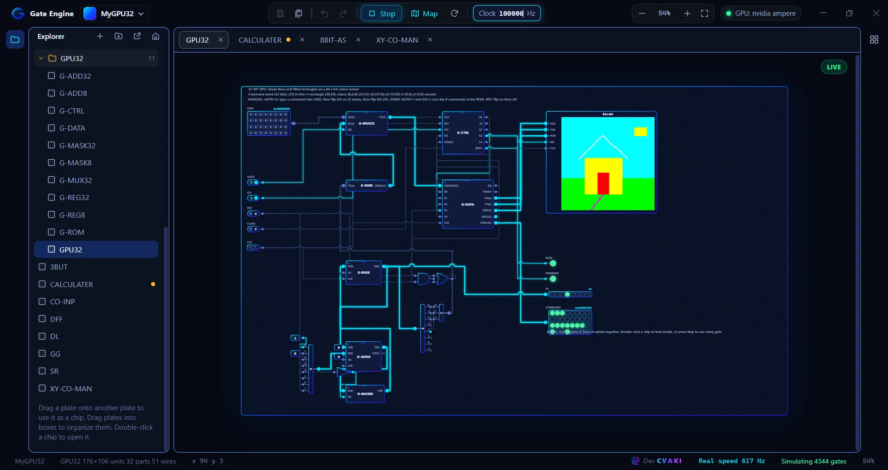

Live simulation
Press Live and wires glow with their signal. Click switches while it runs, and keep editing: the circuit rebuilds on every change.
Wire gates on plates, save them as chips, and simulate live, from a single half adder to a 32-bit GPU that draws on a pixel screen.

Start at NAND and NOR. Package what you build as a chip. Open any chip to see the gates light up inside it.
Press Live and wires glow with their signal. Click switches while it runs, and keep editing: the circuit rebuilds on every change.
Put Input and Output parts on a plate, save it, then drag it onto another plate. The labels you gave become the chip's pin names.
MUX, DEMUX, decoders, adders, comparators, SR / D / T / JK flip-flops, registers, counters, shift registers, ROM and RAM. All made from real gates.
Bit input, Bit output, Splitter and Merger go up to 32 bits. Set any clock speed in Hz, and the status bar shows the real speed your PC reaches.
A framebuffer up to 1000 × 1000 with X, Y, colour, WE and CLR pins. This is how a CPU or GPU you build draws a picture.
Every chip opened up, level inside level, all the way down to the gates. It keeps your layout, and you can click a wire to trace its signal.
Real screenshots from Gate Engine. Click one to view it full size.
Drag a gate from the right panel onto the plate, or double-click it to drop it in the middle. Parts snap to the grid.
> drag · snap to grid
Press a pin and the wire follows your cursor. Click to drop a corner, click a pin of the other kind to finish. Esc cancels.
> click · corner · click pin
One button starts the simulation, and as Stop ends it. Flip switches, watch wires glow, double-click any chip to look inside.
> F5 or F6
Five example projects ship with the source: use Open project and pick the folder.
A Full Adder built from two Half Adder plates, plus an SR latch. The best first project.
An add/subtract chip, an 8-bit comparator, and an Accumulator plate with its own bus pins.
PixelPaint draws on the pixel screen, and SharedBus shows tri-state buffers sharing one wire.
A counter, a latch and an ALU, set up to explore with the Map view and its Auto flow layout.
A 32-bit GPU that draws lines and filled rectangles on a 64 × 64 colour screen. Type a command word, flip GO, and watch it draw. The demo draws a house from a ROM of eight commands.
Download the installer, run it, and start placing gates. Projects are saved as plain folders in your Documents.
Download Gate Engine for Windows (.exe) 109 MBFile: Gate Engine Setup 0.8.0.exe